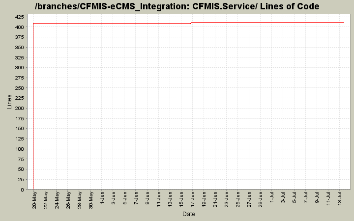

[root]/CFMIS.Service
 Properties
(1 files, 35 lines)
Properties
(1 files, 35 lines)

| Author | Changes | Lines of Code | Lines per Change |
|---|---|---|---|
| lhenry | 10 (100.0%) | 450 (100.0%) | 45.0 |
To fix an issue with projectcode matching. Now by default matcing to project that coperatingplan was submitted for.
18 lines of code changed in 1 file:
Setting ContractCurrentAmount and AwardAmoutn equal to operatingplan submission value. We are not receiving this from eCMS.
3 lines of code changed in 1 file:
Added some null checks to the service.
Added a page for listing the active directory groups of a user.
Modified permission section of operating plan page.
19 lines of code changed in 1 file:
Fix for 497. Also allowing findmaxdate to handle empty contract or fmsrecord tables.
1 lines of code changed in 1 file:
Not keeping user files
0 lines of code changed in 1 file:
Added web service for CFMIS
409 lines of code changed in 5 files: